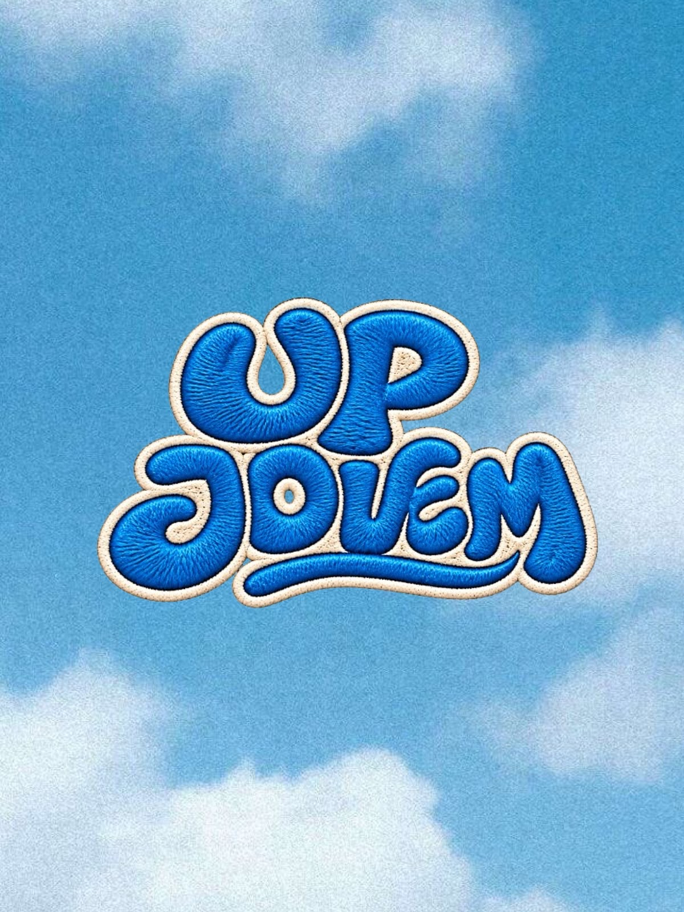

UP Júnior
Adolescentes de 12 a 14 anos.
Conhecer divisão →A UP3 reúne diferentes fases da juventude em uma caminhada de fé, comunhão, crescimento e propósito em Cristo.
A UP3 é o ministério que conecta adolescentes e jovens da igreja. Cada divisão tem sua própria identidade, linguagem e fase de vida, mas todas caminham com o mesmo propósito.
Edite este espaço com a história, visão, missão, valores e informações institucionais oficiais da UP3.
Encontre a divisão correspondente à sua fase e conheça sua identidade, programação, projetos e registros.
Adolescentes de 12 a 14 anos.
Conhecer divisão →Adolescentes de 15 a 17 anos.
Conhecer divisão →
Jovens a partir de 18 anos.
Conhecer divisão →Uma vitrine para apresentar os produtos oficiais do ministério. Esta versão não realiza compras nem pagamentos.
Nome, descrição e preço a adicionar.
Nome, descrição e preço a adicionar.
Nome, descrição e preço a adicionar.
Um carrossel para registrar cultos, encontros, eventos e marcos da história da UP3. Substitua os exemplos por registros reais.
Adicione uma foto e uma breve descrição deste momento.
Conte o que aconteceu e quem participou.
Registre aqui outro marco da caminhada.
Continue acrescentando novas memórias.
Preencha os canais oficiais da liderança e da igreja antes de publicar o site.